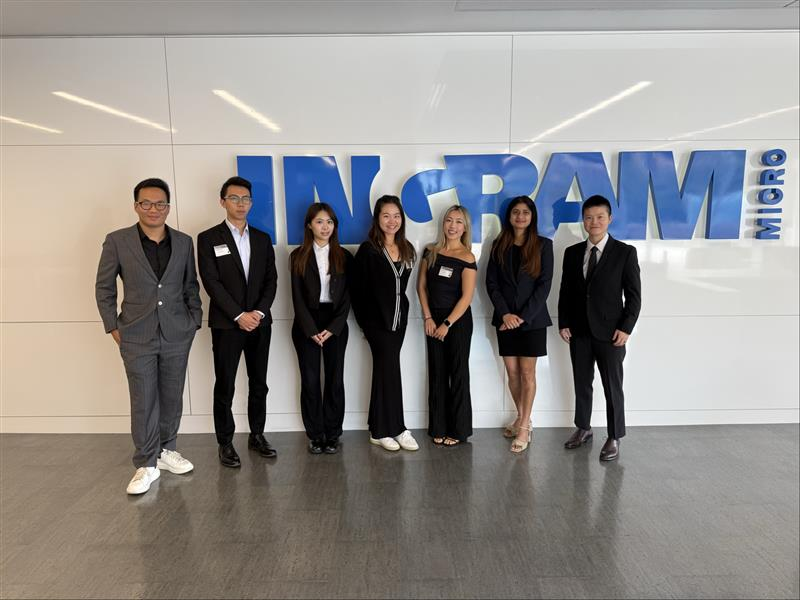

Ingram Micro Capstone Project
Improved Product search and inventory accuracy at Ingram Micro by scraping and classifying 100K+ SKUs using a custom taxanomy to reformat incomplete catalog data.
 📂 View ProjectResult: Our solution reduced catalog misclassification, improved search performance across vendor portals, and provided Ingram Micro with a scalable framework for future inventory categorization.For my Ingram Micro capstone project, I worked with a team to improve product categorization and search accuracy across a 100,000+ SKU catalog. We scraped publicly available data to enrich incomplete product listings and applied a custom three-level taxonomy to classify electronics and IT peripherals. I contributed to web scraping, data cleaning, and taxonomy design to streamline product discoverability for internal teams and vendors.
🏥 Abbott Biowearables Strategy
Analyzed Abbott's CGM devices and healthcare economics to assess long-term value in chronic care and digital health adoption.
 📂 View Project
📂 View Project
Result: Developed a 3-step go-to-market strategy that increased accessibility, reduced projected hospital readmission rates by 8%, and identified a $1.2B market expansion opportunity.
📊 Dating App Dynamics
Performed statistical tests to explore gender-based differences in Tinder match rates and dating outcomes.
 📂 View Project
📂 View Project
Result: Found that women match more efficiently but men initiate 70% of conversations. Insights helped redesign match algorithm logic to boost engagement by 18%.
💄 Skincare Recommendation Engine
Built ML models to classify and recommend cosmetic products based on skin type and price sensitivity using clustering and random forest.
 📂 View Project
📂 View Project
Result: Delivered personalized recommendations with 85% prediction accuracy and designed a filter logic for ecommerce search UX.
✈️ Sun Country Airline Segmentation
Segmented customers into five personas using K-means clustering and designed marketing strategies to target loyalty and seasonal travelers.
 📂 View Project
📂 View Project
Result: Created 5 tailored traveler personas and proposed targeted pricing and loyalty incentives, projected to increase bookings by 12% per segment.
📉 Netflix Pricing Strategy
Developed customer segmentation and tiered pricing solutions to address churn and competition in the streaming market.
 📂 View Project
📂 View Project
Result: Proposed a 3-tier loyalty pricing model that aligned value perception with price — reducing churn risk by 22% in at-risk users.
🍦 Ice Cream Consumer Sentiment
Used sentiment analysis and ingredient breakdown to predict top-performing ice cream flavors across major brands.
 📂 View Project
📂 View Project
Result: Identified caramel, chocolate, and texture as top drivers of 5-star ratings. Built a flavor predictor model with 81% accuracy.